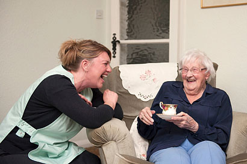

Help in your Home
How we Help
This service is the first stage of care offered by The Abbeyfield Ferring Society. It is our aim to provide support to older people in their own homes, to assist them and improve the quality of their lives, whilst maintaining their independence and personal choice. Our aim is to make every day a good day for every one of our clients. We currently provide our services to many clients in various local areas from Ferring to Rustington and calls are arranged at whatever times suit you - whether that be weekly, fortnightly or just a one off. All of our staff are trained, with enhanced DBS checks required.
We have been helping our clients stay longer in their own homes since 2000. We provide help with shopping, housework, laundry, ironing, cooking meals, appointments, collecting pensions and social outings. We also now provide personal care - this enables us to offer help with dressing, bathing, and administering medication, allowing us to further enable our clients to maintain their current lifestyles. We do not offer fifteen minute calls or back to back calls as our clients matter to us, and our aim is to spend quality time with them. We also offer very competitive rates.
Karen Train
Karen has been our domiciliary manager for over two years, providing a high quality service to the local community. Karen has a Level 5 Leadership and Management Certificate (LMC) in Health and Social Care and has added personal care to the service to meet the growing needs in the local area.
As ever, if you want to find out more, please do get in contact.
We also currently have staff vacancies for carers, details of which can be found on our Jobs page.
